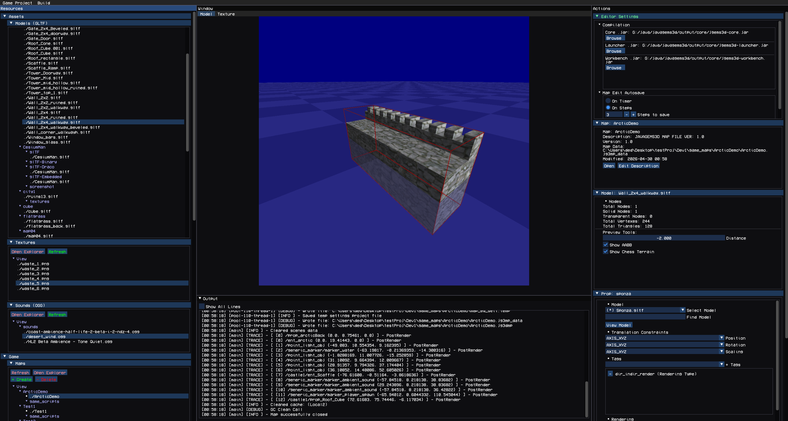
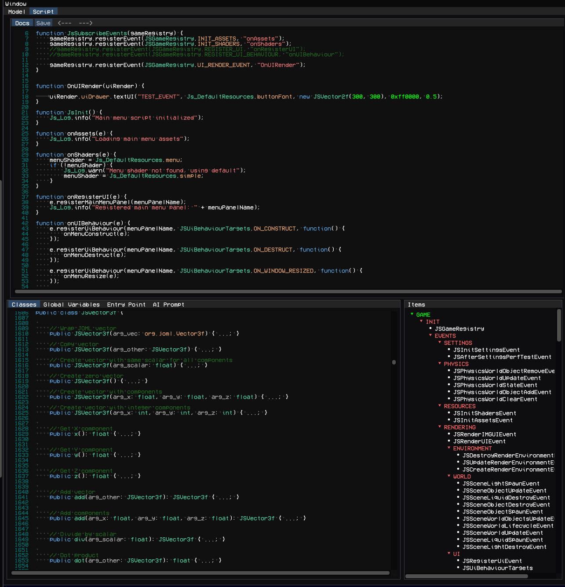
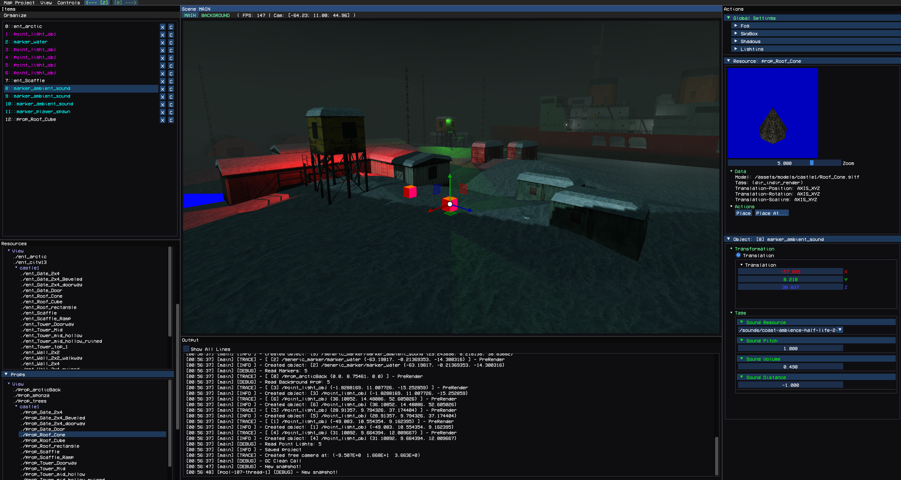
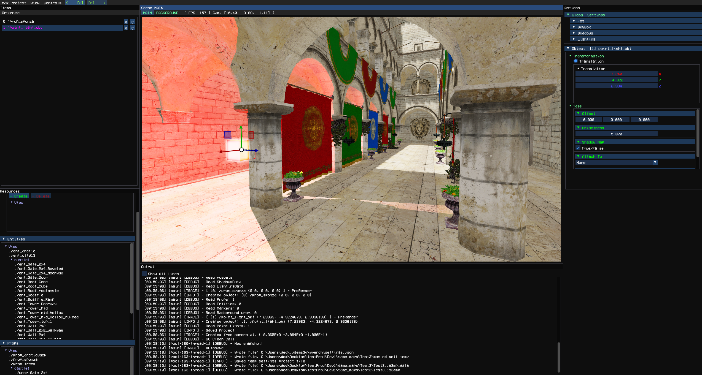

WorkBench Editor
Overview
WorkBench is the game editor for JavaGems3D.
It can be launched in two ways:
- by passing the runtime argument:
workbench=true
- by running the prebuilt Windows
.batlauncher from the ready release package
WorkBench is used for creating and managing:
- game projects
- assets
- maps
- scripts
- entities and props
- markers
- tags
- skyboxes
- editor configuration
Each game project works independently and has its own isolated resource space. Multiple projects can exist at the same time.
When WorkBench starts, the user first enters the project hub where a new game project can be created or an existing one can be opened.
Asset Editor

After opening a project, the user enters the Asset Editor.
This is the main workspace for managing game resources.
Left Panel — Resources
The left panel contains both:
- imported OS files
- editor-created resources
Supported Import Formats
Models
.gltf
Textures
.png.jpg.jpeg.bmp.tga
Audio
.ogg
The editor supports previewing:
- 3D models
- textures
- skyboxes
- audio playback
Editor-Created Resources
Entities
Physical world objects with physics simulation.
Used for gameplay objects that interact with the physics world.
Props
Non-physical scene objects.
Used for decorative or static world elements.
Tags
Custom user-defined attributes.
Tags can be attached to:
- entities
- props
- markers
They are later parsed during map loading and can be used inside events and custom game logic. This allows developers to configure object-specific behavior directly from the editor.
Skyboxes
Skyboxes are created from texture sets and used for environment rendering.
Markers
Special utility objects.
Markers are parsed by the game and can trigger any custom developer-defined behavior.
They are commonly used for:
- spawn points
- triggers
- scripted events
- custom runtime actions
Maps
Maps are created here and edited inside the separate Map Editor.
They are described in the next section.
Scripts
Scripts can be:
- created
- edited
The editor includes:
- script documentation access, Java-styled
- script editing tools
There is also a built-in AI prompt field for generating code with external AI tools.

Bottom Panel — Debug Console
The bottom panel contains the debugging console.
It displays:
- logs
- warnings
- errors
- runtime output
This is used for debugging both editor and game-side systems.
Right Panel — Actions
The right panel is used for:
- selected object configuration
- object actions
- editor operations
It changes depending on the currently selected resource.
Global Editor Settings
Additional editor settings are also available on the right side.
Examples:
- paths to required JAR files
- files used during compilation
- autosave parameters for Map Editor
- editor-specific global settings
Center Panel — Preview Area
The center area is used for:
- model preview
- texture preview
- script editing
- skybox preview
Top Panel — Main Menu
The main menu allows:
- launching the game for testing
- compiling the project
- saving changes
- exiting the editor
Map Editor
The Map Editor works as a separate editor with its own isolated resource space.
It is focused entirely on level creation and scene management.


Left Panel — Resources
Contains:
- entities
- props
- markers
- local map scripts
Several system entities, props, and markers are always available by default.
These are built-in editor resources required for map construction.
Local scripts specific to the current map can also be created here.
Left Panel — Items
The Items section shows all objects currently placed on the map.
Users can:
- inspect objects
- select objects
- manage objects
- use context menu actions
Top Panel — Main Menu
Available actions:
- save map
- exit editor
- launch current map inside the game
- undo
- redo
Center Panel — Scene View
The center panel is the main 3D scene viewport.
Users can:
- place objects
- move objects
- rotate objects
- scale objects
- delete objects
- select objects directly in the world
Scene Types
There are two scene layers:
Main Scene
The primary gameplay scene.
Background Scene
Used mainly for skybox rendering.
Bottom Panel — Console
Displays:
- logs
- debug output
- errors
Right Panel — Actions
Contains:
- selected object settings
- object parameters
- global map settings
Examples of global map settings:
- lighting
- shadows
- environment
- rendering settings
- scene configuration
This is where most map tuning is performed.
API Extension
WorkBench can also be extended through the JavaGems3D API.
Currently, API extension is limited mostly to:
- registering default entities
- registering default props
- registering markers
- defining editor-side default resources
In future versions, editor extension capabilities will be expanded significantly.
This will allow deeper integration of custom gameplay systems directly into WorkBench.